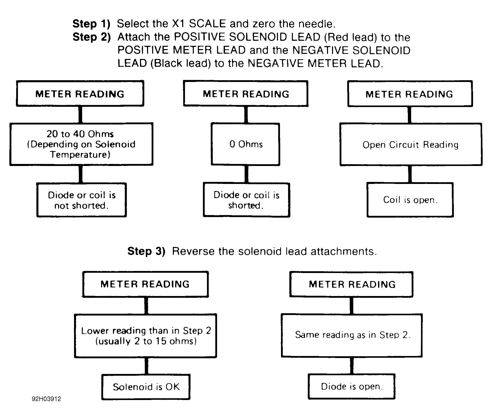

Home
>>
Subaru
>>
2019
>>
Crosstrek Limited
>>
Repair and Diagnosis
>>
General Information
>>
Engine Performance
>>
Parasitic Load Explanation & Test Procedures - General Information
>>
Testing For Parasitic Load
>>
Diode Check & Solenoid Test
Diode Check & Solenoid Test
Fig 1: Diode Check & Solenoid Test

Courtesy of GENERAL MOTORS CORP.